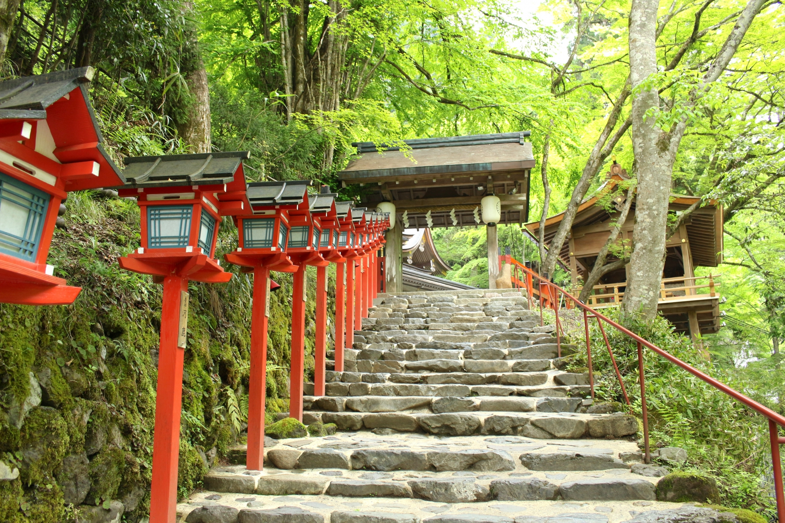
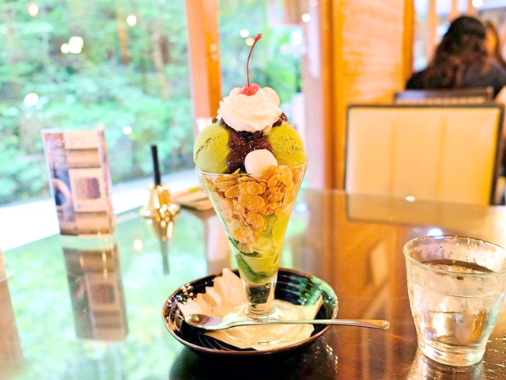
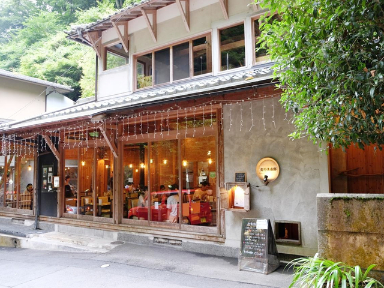
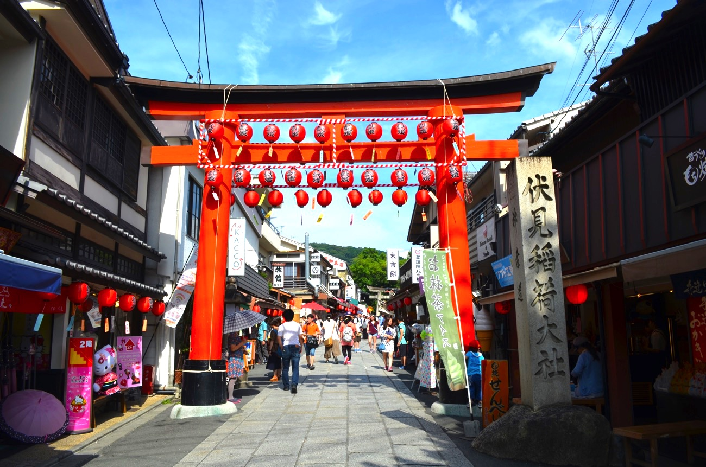
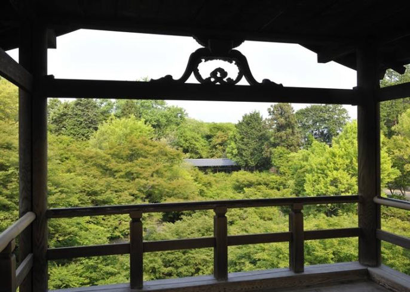
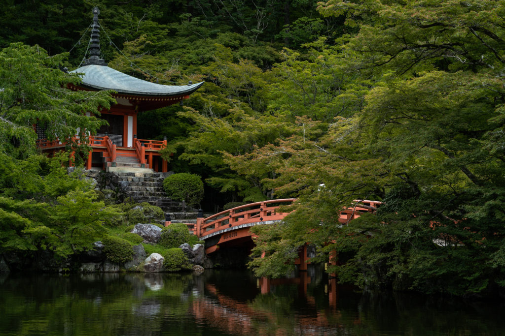

観光場所の紹介
今回の旅行で訪れる観光スポットで、特に気になるところを数か所紹介します。
貴船・貴船神社
京都の市街地より、気温が5~10℃低いとされる「貴船」。
賀茂川の上流に位置しています。「きふね」は「氣生根」とも言われていて
エネルギーやパワーが生まれる根源の地とされ、昔から元気を取り戻すために 拝観する場所でした。
川のせせらぎや大木からのマイナスイオン、大地のパワーを体感することができます。
貴船神社は全国に約500社ある貴船神社の総本宮で、水の神様を祭神として祀っています。
夏になると、神社の周辺には、納涼の川床が設置され、川床料理を楽しむことができます。

また、こんな美味しそうなパフェが食べられる甘味処もあります。


貴船倶楽部[引用]https://4travel.jp/magazine/gourmet/00008
伏見稲荷大社
全国に約3万社あるといわれる稲荷神社の総本宮である伏見稲荷大社。
朱色の鳥居が立ち並ぶ「千本鳥居」が有名です。千本鳥居だけでなく、周辺には
訪れたいスポットが多くあります。また、伏見稲荷参道商店街での食べ歩き
は欠かせません。ここではスズメの焼き鳥を売るお店なんかもあったりします。

東福寺
紅葉で有名な東福寺ですが、夏の「青紅葉」もとても綺麗です。
夏は、深い楓の緑に包まれ、臥雲橋から見渡せる緑の青もみじや、小川に水が流れる
渓谷を眺めていると、ひと時の涼を感じられます。紅葉の時期だと混雑しますが、
夏は通天橋からの青もみじをゆっくり楽しむことができます。

醍醐寺
醍醐寺は世界遺産に認定されており、春は桜、秋葉は紅葉など夏だけでなく四季折々の
景色を見せてくれます。醍醐寺は境内が結構広いので時間をかけて回ってみるのも
いいかもしれません。

[引用] https://nottiphotobiker.com/kyotodaigoji/